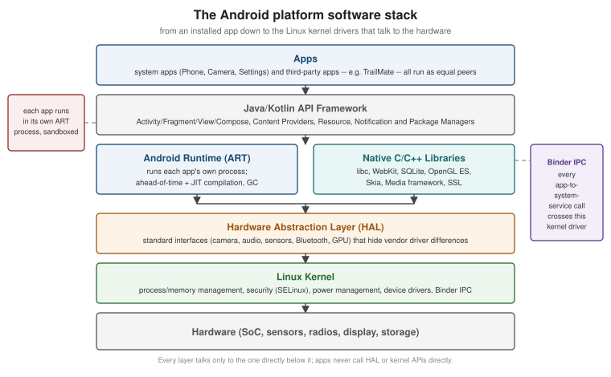

Getting Started with Android
|
This content was generated with the assistance of AI and should be verified against the official documentation before being relied on in production. |
This page starts the Android section of the Guides & References with the platform Android apps run on, the toolchain used to build them, and the first running app the rest of the section builds on: TrailMate, a hiking-trail companion. Every later page in this section extends TrailMate — its domain model, its screens, its data layer — instead of introducing a new example each time, the same way Getting Started with Apple Platforms does for FieldNotes and Getting Started with React Native does for Places.
Examples in this section target Android 17 (API 37) as the latest platform version, Android Studio Quail 4 as the IDE, Android Gradle Plugin (AGP) 9.4.1, and Kotlin 2.4.20 with Jetpack Compose as the recommended UI toolkit (the classic View-based toolkit is covered in depth too, since most production codebases still contain it). The Kotlin language itself — syntax, coroutines, null safety, sealed classes — is not retaught here; see the Kotlin Reference, and in particular Kotlin for Android for the Android-specific extension functions (KTX) built on top of it.
The Android Platform Architecture
An Android device runs a layered software stack. Each layer talks only to the layer directly beneath it — an app never calls into the Hardware Abstraction Layer or the kernel directly, and a driver never assumes anything about which app framework is running above it. This separation is what lets the same app framework run on wildly different silicon, and what lets a chipset vendor update its drivers independently of an Android version.

-
Linux kernel. Android is built on a long-term-support branch of the Linux kernel, extended with Android-specific pieces: Binder (the inter-process communication mechanism every system-service call crosses), the ashmem/ion memory allocators, a wakelock-based power model, and stricter SELinux policies than a typical desktop Linux distribution. The kernel manages processes, memory, and the actual device drivers.
-
Hardware Abstraction Layer (HAL). A set of standard interfaces — one per hardware category (camera, audio, sensors, Bluetooth, GPU, biometrics) — that let the framework above call a uniform API regardless of which vendor’s chipset is underneath. A phone manufacturer implements the HAL for its hardware; the framework never needs vendor-specific code.
-
Android Runtime (ART) and native libraries. ART runs every app in its own process with its own instance of the runtime, combining ahead-of-time (AOT) and just-in-time (JIT) compilation with generational garbage collection. Alongside it sit native (C/C++) system libraries — libc, SQLite, OpenGL ES/Vulkan, the media codecs, WebKit — that both the framework and, through the NDK, apps themselves can link against.
-
Java/Kotlin API framework. The layer most app code talks to directly: the
Activity/Fragment/Viewand Compose UI toolkits, the Content Provider and Resource managers, the Notification and Package managers, and the rest of theandroid./androidx.surface documented throughout this section. -
Apps. System apps (Phone, Camera, Settings) and third-party apps — TrailMate included — run as equal peers on top of the framework, each sandboxed into its own Linux user ID and its own ART process.
Versions and API Levels
Every Android release ships as an API level: a strictly increasing integer that app code and tooling check against, independently of the marketing version number. Since 2025, Google ships a major SDK release in the second quarter of the year and a minor SDK release in the fourth quarter, so a full-numbered release (17) and a following half-step (17 QPR or a later minor bump) can both land within the same calendar year.
| Android version | API level | Notes |
|---|---|---|
Android 17 |
37 |
Latest stable release (June 2026); this section’s baseline. |
Android 16 |
36 |
Previous major release (June 2025); still the Play target-API floor as of this writing (see below). Predictive back animations on by default for apps targeting API 36. |
Android 15 |
35 |
Edge-to-edge enforced for apps targeting API 35; predictive back system animations shown for apps that opt in. |
Android 14 |
34 |
Foreground service types became mandatory; partial photo/video access. |
Android 13 |
33 |
Runtime notification permission ( |
Android 12 / 12L |
31 / 32 |
Material You dynamic color; large-screen/tablet guidance introduced. |
Only the versions an app actually needs to reason about matter day to day: the ones a minSdk/targetSdk pair
spans, and the very latest one a device in the field might already be running. The full table, including every
older release, is at Android Developers — Android Version
History; the current release’s own behavior changes are documented at
Android Developers — Android 17.
compileSdk, minSdk and targetSdk
Three separate integers — all API levels — drive how a module builds and how the platform treats the app at
runtime, declared in the module’s build.gradle.kts (covered in full on
Project Structure, Gradle and Build Variants):
// app/build.gradle.kts
android {
compileSdk = 37
defaultConfig {
minSdk = 26
targetSdk = 36
}
}-
compileSdkselects which version of theandroid.jarstub API the module compiles against — the highest API surface the code is allowed to reference. Raising it costs nothing at runtime; it only unlocks newer APIs (and newer lint checks) at compile time. -
minSdkis the oldest API level the app installs on at all; the Play Store hides the app entirely from devices below it. TrailMate targetsminSdk = 26(Android 8.0), a common floor that still reaches the large majority of active devices while allowing the use of APIs introduced through Android 8. -
targetSdktells the platform which version’s behavior changes the app has been tested against. UnlikecompileSdk, this one has real runtime consequences: raising it turns on that release’s stricter defaults (edge-to-edge enforcement at 35, predictive back and the removal ofonBackPressed()dispatch at 36, and so on) even on a device running a newer OS.
Since August 31, 2026, the Play Store requires new apps and app updates to target API 36 at minimum
(with a short extension window available on request), and it stops offering apps targeting API 34 or below to
new users on devices running a newer platform version. This requirement moves forward roughly once a year, so
targetSdk is a value every published app keeps nudging upward rather than setting once. See
Android Developers — The
<uses-sdk> Element and
Android Developers — Meet Google Play’s
Target API Level Requirement.
Installing Android Studio and the SDK Manager
Android Studio — currently Quail (2026.1), specifically Quail 4, built on IntelliJ IDEA — is the official IDE for Android development, bundling the Android SDK, an emulator, a Kotlin compiler, and Gradle integration in one download. Install it from Android Developers — Download Android Studio, following the platform installer for Windows, macOS, or Linux.
The first launch runs a setup wizard that installs:
-
The latest stable SDK Platform (the
android.jarand platform tools matching the newest API level, 37 here). -
Build Tools, the Android Emulator, and Platform Tools (
adb,fastboot). -
A default Android Virtual Device (AVD) to run on immediately.
After that, the SDK Manager (, or the toolbar icon) is where every other version gets installed or removed on demand: additional SDK Platforms (to compile against or test on an older/newer API level), specific Build Tools versions, the NDK, CMake, and system images for new AVDs. Keeping the SDK Manager’s SDK Platforms and SDK Tools tabs up to date is the first thing to check whenever a project fails to sync after cloning it on a new machine. See Android Developers — Meet Android Studio.
Creating TrailMate
New Project dialog: , then the Empty Activity template under the Phone and Tablet category — the modern, Compose-based starting point (an Empty Views Activity template exists separately for the classic UI toolkit, used later in this section for the Views-based comparison pages). Fill in:
| Field | Value used for TrailMate |
|---|---|
Name |
|
Package name |
|
Language |
Kotlin |
Minimum SDK |
API 26 (Android 8.0) |
Build configuration language |
Kotlin DSL ( |
Walking through the generated files
TrailMate/
app/
build.gradle.kts # module-level build script: compileSdk, defaultConfig, dependencies
src/main/
AndroidManifest.xml # declares the app's components and permissions
java/com/example/trailmate/
MainActivity.kt # the single ComponentActivity generated by the template
res/
values/
strings.xml # the app name and other string resources
themes.xml # the Material 3 theme applied via android:theme
drawable/, mipmap-*/ # launcher icon variants
build.gradle.kts # root/project-level build script (plugin versions, in AGP 9's built-in-Kotlin
# setup this stays minimal -- covered next in this section)
settings.gradle.kts # module list, plugin and dependency repositories
gradle/libs.versions.toml # the version catalog every dependency version is declared inMainActivity.kt is generated as:
// app/src/main/java/com/example/trailmate/MainActivity.kt
package com.example.trailmate
import android.os.Bundle
import androidx.activity.ComponentActivity
import androidx.activity.compose.setContent
import androidx.activity.enableEdgeToEdge
import androidx.compose.foundation.layout.fillMaxSize
import androidx.compose.foundation.layout.padding
import androidx.compose.material3.Scaffold
import androidx.compose.material3.Text
import androidx.compose.runtime.Composable
import androidx.compose.ui.Modifier
import com.example.trailmate.ui.theme.TrailMateTheme
class MainActivity : ComponentActivity() {
override fun onCreate(savedInstanceState: Bundle?) {
super.onCreate(savedInstanceState)
enableEdgeToEdge()
setContent {
TrailMateTheme {
Scaffold(modifier = Modifier.fillMaxSize()) { innerPadding ->
Greeting(name = "TrailMate", modifier = Modifier.padding(innerPadding))
}
}
}
}
}
@Composable
fun Greeting(name: String, modifier: Modifier = Modifier) {
Text(text = "Hello $name!", modifier = modifier)
}MainActivity extends ComponentActivity (not AppCompatActivity — Compose does not need the AppCompat
compatibility shims that the View-based pages in this section rely on), calls enableEdgeToEdge() so the app
draws behind the system bars from the start, and hands its whole UI to setContent { } as a single Compose
tree. TrailMateTheme is a small generated wrapper around MaterialTheme (covered in full on
Material 3 and Theming in Compose).
Jetpack Compose Fundamentals, later in this section, replaces this
placeholder Greeting with TrailMate’s real TrailListScreen.
Running TrailMate
On an Android Virtual Device (emulator)
The Device Manager () creates and starts AVDs — emulated devices backed by a
system image chosen in the SDK Manager. Pick a device definition (e.g. Pixel 9), a system image matching the
target API level (a google_apis image includes Play Services; a google_apis_playstore image adds the real
Play Store app for testing in-app purchases and Play policies), and start it once; the Run toolbar button then
deploys the app straight to it. See
Android Developers — Run Apps on the Android Emulator.
On a physical device
# with the device connected over USB and USB debugging enabled in Developer options
adb devicesSee Android Developers — Run Apps on a Hardware Device for enabling Developer options and USB debugging on the device, and for wireless debugging (Android 11+): pairing once with a QR code or a pairing code from in Android Studio, after which the same Wi-Fi network is enough to deploy and debug without a cable on every subsequent run.
adb Essentials and Logcat
adb (Android Debug Bridge), installed as part of the Platform Tools, is the command-line bridge between a
development machine and a running emulator or device:
adb devices # list connected devices/emulators
adb install app-debug.apk # sideload an APK
adb shell # open a shell on the device
adb logcat # stream the device's system log
adb shell am kill com.example.trailmate # simulate the OS killing a backgrounded processThat last command is the standard way to test process death handling, covered in depth on Activities and the Activity Lifecycle and Saving UI State: Views vs. Compose. See Android Developers — Android Debug Bridge (adb).
Logcat, both as adb logcat and as the Logcat tool window inside Android Studio, streams every log line
tagged with a level (Verbose/Debug/Info/Warn/Error/Assert), a tag, and the process/thread it came
from. The Studio window adds filtering by app, level, and a free-text or regex search — the first place to look
whenever an app crashes or misbehaves only on-device. See
Android Developers — Write and View Logs with Logcat.
Gemini in Android Studio
Android Studio ships an integrated AI assistant, Gemini in Android Studio, in a dedicated tool window: it
answers questions about the open project with real code context, explains a stack trace pasted into it,
suggests a fix, generates Compose @Preview variations, and can generate unit tests for a selected function.
It is a productivity aid layered on top of the same APIs and idioms this section teaches directly — every
example in this section is written and explained without relying on it, and its suggestions are still worth
checking against the official documentation the same way this section’s own AI-assisted content is (see the
disclaimer above). See Android Developers — Gemini in
Android Studio and Android Developers — AI on Android.
Learning Resources
-
Android Basics with Compose — Google’s free, unit-based course teaching Compose UI, state, and architecture from zero, using the same Kotlin/Compose baseline this section assumes.
-
Codelabs — short, hands-on guided exercises covering individual APIs (Room, WorkManager, Navigation, and many more), useful alongside a specific page in this section.
-
Official samples — runnable, maintained sample apps (Now in Android among them) showing the recommended architecture end to end, a useful cross-check once TrailMate’s own architecture is introduced on Recommended App Architecture.
How This Section Is Organized
This section moves from foundations to the classic View-based toolkit, then to Jetpack Compose, then puts the two side by side before covering data, background work, device integration, testing, and shipping:
-
Foundations & tooling (this page, then Gradle/build variants, the manifest and intents, resources and configuration).
-
Classic View-based UI (activities, fragments, Views/layouts, RecyclerView, custom views/animation, Navigation with fragments) — taught in full, since most production Android code still uses it, while noting throughout that Compose is now the recommended toolkit.
-
Jetpack Compose (fundamentals, layouts and lazy lists, state and side effects, Material 3, Navigation Compose/Navigation 3, animation and gestures, adaptive layouts, accessibility).
-
Architecture: old vs. new (recommended app architecture, ViewModel/lifecycle/coroutines/Flow, a full comparison of state persistence and architecture between the two toolkits, and a concrete migration guide from Views to Compose).
-
Data, networking & libraries (local storage, Room and Paging, networking, image loading, dependency injection).
-
System integration & device features (background work, notifications and widgets, permissions/privacy/ security, device sensors/camera/location, graphics).
-
Quality (unit testing, instrumented/UI testing, debugging/code quality/performance).
-
Build, ship & automate (signing and releasing, publishing on Google Play, publishing a library to Maven Central, CI/CD with GitHub Actions) — these last pages switch the running example to the author’s own published library,
irurueta-android-glutils, since publishing concerns differ from an end-user app’s.
Every page follows the same pattern: a concept explained in prose, a TrailMate (or irurueta-android-glutils)
code example, and an official link right after each example.